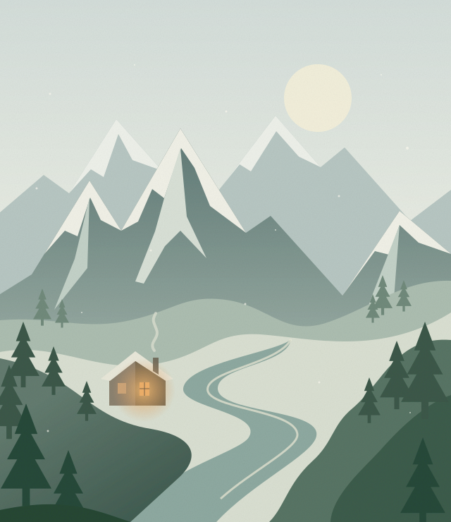

Anantnag, Kashmir
Where it begins.
Winters. A pheran. The warmth of a kangri. Before the cities and the code, there is home.
THE THINGS WE CARRY
A personal corner of the internet
I’m Anirudh. From Anantnag, Kashmir.
College took me to Bangalore. Tech became part of the journey. This is a place to trace it all.

THE VALLEY01 / The journey
Home, a new city, and everything still unfolding. Three chapters of one ongoing story.
Anantnag, Kashmir
Winters. A pheran. The warmth of a kangri. Before the cities and the code, there is home.
Bangalore
College brought a different city into the story. A chapter for learning, tech, and finding a way forward.
Working life
College has given way to work. The next part belongs here: what I’m doing, what I’m learning, what comes next.
A little winter.
A little fire.
A sense of home.
The cold of a Kashmiri winter. The quiet warmth of a kangri beneath a pheran. This little corner of the internet borrows from that contrast.
02 / Field notes
Not everything needs to be a milestone.
A place for memories, questions, and things made along the way.
Placeholder / A memory from home
This page is waiting for a real memory from Anantnag. A place, a person, a winter afternoon—something small enough to remember clearly.
Placeholder / The college chapter
A space for the college name, the years, and a story that says more than either. What made a new city start to feel familiar?
Placeholder / A note from now
Add something real from working life: an idea explored, a thing built, or a question that hasn’t let go. No polished success story required.
These are spaces for future stories, not published posts.